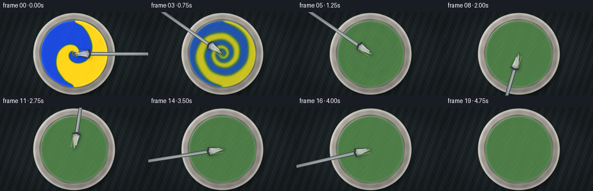
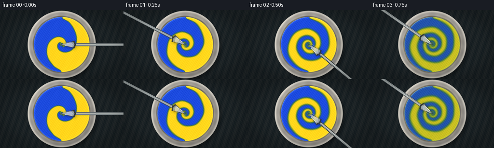
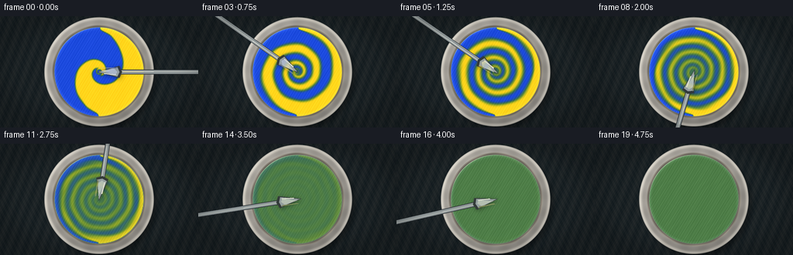
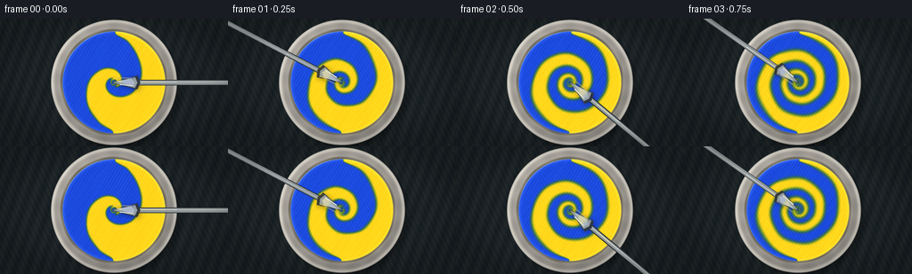
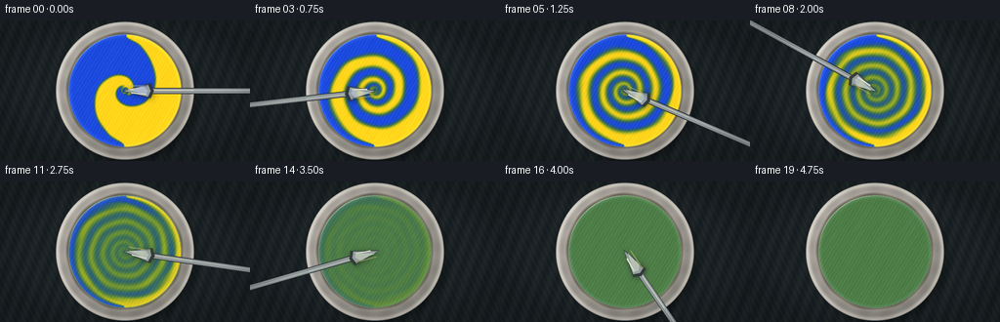
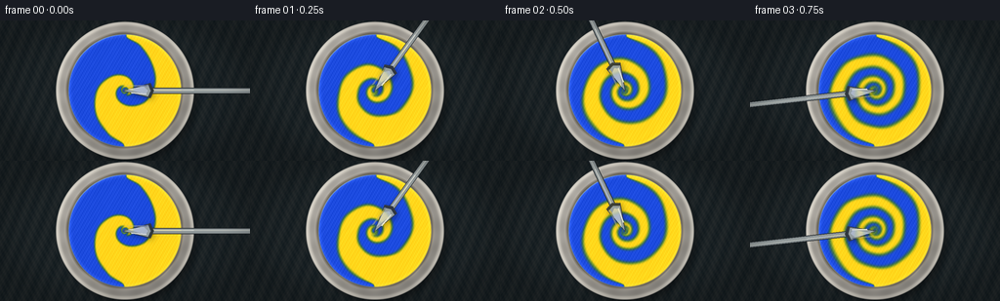

CODING AGENTS AS PIXEL WORLD MODELS
traex/DeepSeek-V4.1-Flash · material_0000
点击播放 · 原生 RGB 像素
逐轮保存的候选
回放视频、检查图与代码变化。
每份候选均可单独播放。实际图片检查记录在下方工具轨迹中。
候选 01播放与检查图
点击播放 · 原生 RGB 像素


展开代码变化
--- 上一保存版本
+++ 本次保存版本
@@ -0,0 +1,369 @@
+"""Procedural paint-mixing video for the PixelWorld text-to-video task."""
+
+from __future__ import annotations
+
+from pathlib import Path
+
+import numpy as np
+from PIL import Image, ImageDraw, ImageFilter
+
+import artifact_io
+
+
+CASE_DIR = Path(__file__).resolve().parent
+WIDTH, HEIGHT, FRAMES, FPS = 256, 144, 20, 4.0
+SCALE = 3
+SIM_W, SIM_H = 384, 216
+OUT_W, OUT_H = WIDTH * SCALE, HEIGHT * SCALE
+
+
+def smoothstep(edge0, edge1, x):
+ t = np.clip((x - edge0) / (edge1 - edge0), 0.0, 1.0)
+ return t * t * (3.0 - 2.0 * t)
+
+
+def bilinear_sample(field, x, y):
+ """Sample a 2-D field at normalized coordinates in [-1.5, 1.5]."""
+ h, w = field.shape
+ px = (x + 1.5) * (w - 1) / 3.0
+ py = (y + 0.84375) * (h - 1) / 1.6875
+ px = np.clip(px, 0.0, w - 1.000001)
+ py = np.clip(py, 0.0, h - 1.000001)
+ x0 = px.astype(np.int32)
+ y0 = py.astype(np.int32)
+ x1 = np.minimum(x0 + 1, w - 1)
+ y1 = np.minimum(y0 + 1, h - 1)
+ fx = px - x0
+ fy = py - y0
+ top = field[y0, x0] * (1.0 - fx) + field[y0, x1] * fx
+ bottom = field[y1, x0] * (1.0 - fx) + field[y1, x1] * fx
+ return top * (1.0 - fy) + bottom * fy
+
+
+def blur3(field, amount):
+ out = field * (1.0 - amount)
+ out += amount * 0.25 * (
+ np.roll(field, 1, 0)
+ + np.roll(field, -1, 0)
+ + np.roll(field, 1, 1)
+ + np.roll(field, -1, 1)
+ )
+ return out
+
+
+def make_coordinate_grid(w, h):
+ x = np.linspace(-1.5, 1.5, w, dtype=np.float32)[None, :]
+ y = np.linspace(-0.84375, 0.84375, h, dtype=np.float32)[:, None]
+ return np.broadcast_to(x, (h, w)).copy(), np.broadcast_to(y, (h, w)).copy()
+
+
+def velocity_field(x, y, t, blade_angle):
+ """A bounded, time-varying vortex field approximating a vigorously stirred fluid."""
+ r2 = x * x + y * y
+ r = np.sqrt(r2) + 1e-6
+ theta = np.arctan2(y, x)
+
+ # Strong central rotation, with a slow pulse as the spatula digs through the paint.
+ pulse = 0.82 + 0.18 * np.sin(2.0 * np.pi * (1.55 * t + 0.08))
+ core = smoothstep(0.015, 0.10, r) * np.exp(-(r / 0.53) ** 4)
+ tangential_speed = (1.34 * pulse + 0.15 * np.sin(3.0 * theta + 5.0 * t)) * core
+ u = -np.sin(theta) * tangential_speed
+ v = np.cos(theta) * tangential_speed
+
+ # Two counter-rotating lobes create the stretched ribbons visible during mixing.
+ lobe_amp = 0.34 * smoothstep(0.04, 0.24, t)
+ for k in range(3):
+ phase = blade_angle + k * (2.0 * np.pi / 3.0) + 0.20 * np.sin(t * 3.1 + k)
+ cx = 0.27 * np.cos(phase)
+ cy = 0.27 * np.sin(phase)
+ dx = x - cx
+ dy = y - cy
+ rr = dx * dx + dy * dy
+ swirl = lobe_amp * np.exp(-rr / 0.035) * (1.0 if k != 1 else -0.78)
+ u += -dy * swirl
+ v += dx * swirl
+
+ # Gentle radial breathing keeps the flow from becoming a perfect rigid rotation.
+ radial = 0.045 * np.sin(7.0 * theta - 6.0 * t) * smoothstep(0.08, 0.35, r) * core
+ u += x / r * radial
+ v += y / r * radial
+ wall = smoothstep(0.66, 0.57, r)
+ return u * wall, v * wall
+
+
+def initial_pigments(x, y):
+ radius = np.sqrt(x * x + y * y)
+ paint = smoothstep(0.686, 0.670, radius)
+ boundary = 0.020 * np.sin(9.0 * y) + 0.012 * np.sin(17.0 * y + 0.8)
+ blue_side = smoothstep(boundary + 0.010, boundary - 0.010, x)
+ yellow_side = smoothstep(boundary - 0.010, boundary + 0.010, x)
+ # Rounded interlocking edges read as two substantial dollops rather than a flat split.
+ blue_lobe = smoothstep(0.24, 0.17, np.sqrt((x + 0.28) ** 2 + (y + 0.06) ** 2))
+ yellow_lobe = smoothstep(0.24, 0.17, np.sqrt((x - 0.28) ** 2 + (y - 0.04) ** 2))
+ blue = paint * np.maximum(blue_side, 0.58 * blue_lobe)
+ yellow = paint * np.maximum(yellow_side, 0.58 * yellow_lobe)
+ total = blue + yellow + 1e-7
+ blue = blue / total * paint
+ yellow = yellow / total * paint
+ return blue.astype(np.float32), yellow.astype(np.float32), paint.astype(np.float32)
+
+
+def simulate_frames():
+ x, y = make_coordinate_grid(SIM_W, SIM_H)
+ blue, yellow, paint = initial_pigments(x, y)
+ frames = []
+ substeps = 24
+ dt = 0.021
+
+ for frame_index in range(FRAMES):
+ t_frame = frame_index / FPS
+ for sub in range(substeps):
+ t = t_frame + sub / (FPS * substeps)
+ blade_angle = -2.0 * np.pi * (1.88 * t) + 0.35 * np.sin(4.0 * t)
+ u, v = velocity_field(x, y, t, blade_angle)
+ sx = x - u * dt
+ sy = y - v * dt
+ blue = bilinear_sample(blue, sx, sy) * paint
+ yellow = bilinear_sample(yellow, sx, sy) * paint
+ blue = np.clip(blue, 0.0, 1.0)
+ yellow = np.clip(yellow, 0.0, 1.0)
+
+ diff = 0.018 + 0.105 * smoothstep(0.28, 0.88, t)
+ blue = blur3(blue, diff)
+ yellow = blur3(yellow, diff)
+
+ # The late-stage homogenization represents the final vigorous passes of the spatula.
+ blend = smoothstep(0.53, 1.22, t_frame)
+ fine_phase = 0.018 * np.sin(13.0 * x + 9.0 * y + 3.0 * t_frame)
+ target = 0.5 + fine_phase * (1.0 - blend)
+ blue = (1.0 - 0.93 * blend) * blue + (0.93 * blend) * target * paint
+ yellow = (1.0 - 0.93 * blend) * yellow + (0.93 * blend) * target * paint
+
+ total = blue + yellow + 1e-7
+ norm = np.where(total > 1e-5, paint / total, 0.0)
+ blue = np.clip(blue * norm, 0.0, 1.0).astype(np.float32)
+ yellow = np.clip(yellow * norm, 0.0, 1.0).astype(np.float32)
+ frames.append((blue.copy(), yellow.copy(), paint.copy(), t_frame))
+
+ return frames
+
+
+def resize_field(field, w, h):
+ image = Image.fromarray(np.clip(field * 255.0, 0, 255).astype(np.uint8), mode="L")
+ return np.asarray(image.resize((w, h), Image.Resampling.BICUBIC), dtype=np.float32) / 255.0
+
+
+def paint_surface(blue, yellow, paint, frame_index, t, ox, oy):
+ """Render thick paint with subtractive color, height lighting, and glossy reflections."""
+ bx = resize_field(blue, OUT_W, OUT_H)
+ yx = resize_field(yellow, OUT_W, OUT_H)
+ px = resize_field(paint, OUT_W, OUT_H)
+
+ # Yellow and blue pigments combine multiplicatively, producing a true green.
+ yellow_rgb = np.array([0.975, 0.790, 0.070], dtype=np.float32)
+ blue_rgb = np.array([0.070, 0.250, 0.825], dtype=np.float32)
+ absorb_y = -np.log(np.maximum(yellow_rgb, 1e-4))
+ absorb_b = -np.log(np.maximum(blue_rgb, 1e-4))
+
+ surface_noise = (
+ 0.52 * np.sin(21.0 * ox + 7.0 * oy + 1.2 * t)
+ + 0.30 * np.sin(37.0 * ox - 19.0 * oy + 2.1)
+ + 0.18 * np.sin(63.0 * ox + 43.0 * oy - 0.9 * t)
+ )
+ edge_mound = 0.095 * np.exp(-((np.sqrt(ox * ox + oy * oy) - 0.63) / 0.055) ** 2)
+ center_swell = 0.12 * np.exp(-(ox * ox + oy * oy) / 0.15)
+ height = px * (0.92 + 0.10 * surface_noise) + edge_mound + center_swell
+
+ # A small, evolving relief texture gives the paint a buttery, physical surface.
+ ridge = 0.018 * np.sin(44.0 * ox + 6.0 * np.sin(10.0 * oy + 0.5 * t))
+ height = height + px * ridge
+ gy, gx = np.gradient(height)
+ nx = -2.4 * gx
+ ny = -2.4 * gy
+ nz = np.ones_like(nx)
+ norm = np.sqrt(nx * nx + ny * ny + nz * nz)
+ nx, ny, nz = nx / norm, ny / norm, nz / norm
+
+ light = np.array([-0.42, -0.56, 0.72], dtype=np.float32)
+ light = light / np.linalg.norm(light)
+ diffuse = np.clip(nx * light[0] + ny * light[1] + nz * light[2], 0.0, 1.0)
+ ambient = 0.57 + 0.20 * nz
+ illumination = ambient + 0.34 * diffuse
+
+ trans = np.exp(-(yx[..., None] * absorb_y + bx[..., None] * absorb_b))
+ paint_rgb = trans * illumination[..., None]
+
+ # Wet paint catches a broad softbox highlight and a narrower sheen.
+ view = np.array([0.0, 0.0, 1.0], dtype=np.float32)
+ half = light + view
+ half /= np.linalg.norm(half)
+ spec_angle = np.clip(nx * half[0] + ny * half[1] + nz * half[2], 0.0, 1.0)
+ gloss = 0.20 * spec_angle ** 48 + 0.08 * spec_angle ** 12
+ paint_rgb += gloss[..., None] * np.array([1.0, 0.98, 0.90], dtype=np.float32)
+
+ # Fine pigment grain and a cool rim reflection add material detail.
+ grain = 0.018 * (
+ np.sin(151.0 * ox + 89.0 * oy)
+ + 0.6 * np.sin(211.0 * ox - 137.0 * oy + 1.7)
+ )
+ paint_rgb += grain[..., None]
+ rim = smoothstep(0.625, 0.684, np.sqrt(ox * ox + oy * oy))
+ paint_rgb += (0.09 * rim)[..., None] * np.array([0.78, 0.88, 1.0], dtype=np.float32)
+
+ return np.clip(paint_rgb, 0.0, 1.0), px
+
+
+def ceramic_scene(ox, oy):
+ """Dark stone tabletop, warm ceramic palette, and soft contact shadows."""
+ r = np.sqrt(ox * ox + oy * oy)
+ theta = np.arctan2(oy, ox)
+ yy, xx = np.indices((OUT_H, OUT_W), dtype=np.float32)
+
+ table_noise = (
+ 0.018 * np.sin(38.0 * ox + 13.0 * oy)
+ + 0.013 * np.sin(91.0 * ox - 47.0 * oy)
+ + 0.009 * np.sin(173.0 * ox + 119.0 * oy)
+ )
+ table = np.empty((OUT_H, OUT_W, 3), dtype=np.float32)
+ table[..., 0] = 0.105 + table_noise
+ table[..., 1] = 0.132 + table_noise * 0.82
+ table[..., 2] = 0.142 + table_noise * 0.68
+
+ # Large, soft shadow cast down and to the right.
+ sr = np.sqrt((ox - 0.055) ** 2 + (oy - 0.070) ** 2)
+ shadow = smoothstep(0.89, 0.73, sr)
+ table *= (1.0 - 0.40 * shadow[..., None])
+
+ bowl_alpha = smoothstep(0.835, 0.824, r)
+ bevel = np.exp(-((r - 0.810) / 0.024) ** 2)
+ inner_shadow = smoothstep(0.745, 0.680, r)
+ bowl = np.empty_like(table)
+ ceramic = 0.68 + 0.08 * np.cos(theta + 2.2) + 0.018 * np.sin(17.0 * theta)
+ bowl[..., 0] = ceramic * 1.01
+ bowl[..., 1] = ceramic * 0.985
+ bowl[..., 2] = ceramic * 0.94
+ bowl *= (0.86 + 0.10 * inner_shadow[..., None])
+ bowl += (0.19 * bevel)[..., None] * np.array([1.0, 0.98, 0.91], dtype=np.float32)
+ bowl -= (0.09 * smoothstep(0.72, 0.67, r))[..., None]
+
+ scene = table * (1.0 - bowl_alpha[..., None]) + bowl * bowl_alpha[..., None]
+
+ # Inner basin wall and subtle glaze variation.
+ basin = smoothstep(0.720, 0.704, r)
+ basin_color = 0.54 + 0.045 * np.sin(9.0 * theta + 0.7)
+ basin_rgb = np.stack(
+ (basin_color * 1.04, basin_color * 0.99, basin_color * 0.90), axis=-1
+ )
+ scene = scene * (1.0 - basin[..., None]) + basin_rgb * basin[..., None]
+ return np.clip(scene, 0.0, 1.0)
+
+
+def draw_spatula(image, t, frame_index):
+ """Composite a rotating stainless spatula, lifting it away after mixing completes."""
+ if t > 4.24:
+ return image
+
+ angle = -2.0 * np.pi * (1.88 * t) + 0.35 * np.sin(4.0 * t)
+ dir_x, dir_y = np.cos(angle), np.sin(angle)
+ tan_x, tan_y = -dir_y, dir_x
+
+ # Keep the blade near the center and the handle anchored off the top-right edge.
+ blade_r = 0.145 + 0.025 * np.sin(3.2 * t)
+ cx = blade_r * dir_x
+ cy = blade_r * dir_y
+ lift = smoothstep(4.08, 4.72, t)
+ cx += lift * 0.42 * dir_x
+ cy += lift * 0.42 * dir_y
+ alpha = 1.0 - smoothstep(4.20, 4.70, t)
+ if alpha <= 0.01:
+ return image
+
+ high = Image.fromarray(
+ np.round(np.clip(image, 0.0, 1.0) * 255.0).astype(np.uint8), mode="RGB"
+ )
+ overlay = Image.new("RGBA", (OUT_W, OUT_H), (0, 0, 0, 0))
+ draw = ImageDraw.Draw(overlay)
+
+ def point(radial, tangential):
+ x = cx + radial * dir_x + tangential * tan_x
+ y = cy + radial * dir_y + tangential * tan_y
+ return ((x + 1.5) * OUT_W / 3.0, (y + 0.84375) * OUT_H / 1.6875)
+
+ # Handle extends radially out of frame.
+ p0 = point(0.06, 0.0)
+ p1 = point(1.70, 0.0)
+ width = max(2, int(0.031 * OUT_H / 1.6875 * 2.0))
+ draw.line([p0, p1], fill=(31, 36, 40, int(255 * alpha)), width=width + 4)
+ draw.line([p0, p1], fill=(142, 150, 151, int(255 * alpha)), width=width)
+ draw.line(
+ [point(0.16, -0.006), point(1.55, -0.006)],
+ fill=(220, 224, 218, int(205 * alpha)),
+ width=max(1, width // 4),
+ )
+
+ # Broad spoon bowl: dark underside edge, silver body, and a specular sweep.
+ blade = [point(-0.18, 0.0), point(0.16, 0.092), point(0.20, 0.0), point(0.16, -0.092)]
+ draw.polygon(blade, fill=(50, 55, 57, int(235 * alpha)))
+ blade_inner = [point(-0.16, 0.0), point(0.13, 0.074), point(0.16, 0.0), point(0.13, -0.074)]
+ draw.polygon(blade_inner, fill=(151, 160, 161, int(248 * alpha)))
+ sheen = [point(-0.11, -0.018), point(0.10, 0.045), point(0.13, 0.0), point(0.08, -0.050)]
+ draw.polygon(sheen, fill=(224, 228, 221, int(190 * alpha)))
+ highlight = [point(-0.07, 0.020), point(0.11, 0.038), point(0.11, 0.050), point(-0.07, 0.034)]
+ draw.polygon(highlight, fill=(249, 247, 231, int(220 * alpha)))
+
+ # Tiny warm reflected color from the paint on the spoon's lower edge.
+ reflection = [point(-0.13, -0.068), point(0.14, -0.066), point(0.11, -0.052), point(-0.11, -0.054)]
+ draw.polygon(reflection, fill=(205, 189, 126, int(115 * alpha)))
+
+ # A soft shadow makes the utensil sit above the wet surface.
+ shadow = Image.new("RGBA", overlay.size, (0, 0, 0, 0))
+ shadow_draw = ImageDraw.Draw(shadow)
+ shifted = [(x + 0.012 * OUT_W / 3.0, y + 0.014 * OUT_H / 1.6875) for x, y in blade]
+ shadow_draw.polygon(shifted, fill=(0, 0, 0, int(100 * alpha)))
+ shadow = shadow.filter(ImageFilter.GaussianBlur(radius=3.0 * SCALE))
+ high = Image.alpha_composite(high.convert("RGBA"), shadow).convert("RGB")
+ high = Image.alpha_composite(high.convert("RGBA"), overlay).convert("RGB")
+ return np.asarray(high, dtype=np.float32) / 255.0
+
+
+def render_frame(frame_data, frame_index):
+ blue, yellow, paint, t = frame_data
+ ox, oy = make_coordinate_grid(OUT_W, OUT_H)
+ scene = ceramic_scene(ox, oy)
+ surface, paint_mask = paint_surface(blue, yellow, paint, frame_index, t, ox, oy)
+
+ # Paint edge casts a narrow, soft shadow onto the basin.
+ r = np.sqrt(ox * ox + oy * oy)
+ edge_shadow = smoothstep(0.706, 0.684, r) * smoothstep(0.646, 0.678, r)
+ scene *= (1.0 - 0.28 * edge_shadow[..., None])
+ composite = scene * (1.0 - paint_mask[..., None]) + surface * paint_mask[..., None]
+
+ # Very subtle camera exposure breathing keeps the still-life from feeling synthetic.
+ exposure = 1.0 + 0.008 * np.sin(frame_index * 0.83)
+ composite = np.clip(composite * exposure, 0.0, 1.0)
+ composite = draw_spatula(composite, t, frame_index)
+
+ # Restrained vignette focuses attention on the mixing paint.
+ rr = np.sqrt((ox / 1.5) ** 2 + (oy / 0.84375) ** 2)
+ vignette = 1.0 - 0.18 * smoothstep(0.72, 1.18, rr)
+ composite *= vignette[..., None]
+ return np.clip(composite, 0.0, 1.0)
+
+
+def main():
+ simulation = simulate_frames()
+ frames = []
+ for index, frame_data in enumerate(simulation):
+ high = render_frame(frame_data, index)
+ image = Image.fromarray(np.round(high * 255.0).astype(np.uint8), mode="RGB")
+ image = image.resize((WIDTH, HEIGHT), Image.Resampling.LANCZOS)
+ frames.append(np.asarray(image, dtype=np.uint8))
+ print(f"rendered {index + 1:02d}/{FRAMES}", flush=True)
+
+ frames = np.stack(frames, axis=0)
+ artifact_io.save(frames, CASE_DIR)
+ print(f"saved {frames.shape} at {FPS:g} fps", flush=True)
+
+
+if __name__ == "__main__":
+ main()
候选 02播放与检查图
点击播放 · 原生 RGB 像素


展开代码变化
--- 上一保存版本
+++ 本次保存版本
@@ -128,16 +128,16 @@
blue = np.clip(blue, 0.0, 1.0)
yellow = np.clip(yellow, 0.0, 1.0)
- diff = 0.018 + 0.105 * smoothstep(0.28, 0.88, t)
+ diff = 0.0018 + 0.0110 * smoothstep(0.70, 4.40, t)
blue = blur3(blue, diff)
yellow = blur3(yellow, diff)
# The late-stage homogenization represents the final vigorous passes of the spatula.
- blend = smoothstep(0.53, 1.22, t_frame)
+ blend = smoothstep(2.20, 4.48, t_frame)
fine_phase = 0.018 * np.sin(13.0 * x + 9.0 * y + 3.0 * t_frame)
target = 0.5 + fine_phase * (1.0 - blend)
- blue = (1.0 - 0.93 * blend) * blue + (0.93 * blend) * target * paint
- yellow = (1.0 - 0.93 * blend) * yellow + (0.93 * blend) * target * paint
+ blue = (1.0 - 0.88 * blend) * blue + (0.88 * blend) * target * paint
+ yellow = (1.0 - 0.88 * blend) * yellow + (0.88 * blend) * target * paint
total = blue + yellow + 1e-7
norm = np.where(total > 1e-5, paint / total, 0.0)
候选 03播放与检查图
点击播放 · 原生 RGB 像素


展开代码变化
--- 上一保存版本
+++ 本次保存版本
@@ -119,7 +119,7 @@
t_frame = frame_index / FPS
for sub in range(substeps):
t = t_frame + sub / (FPS * substeps)
- blade_angle = -2.0 * np.pi * (1.88 * t) + 0.35 * np.sin(4.0 * t)
+ blade_angle = -2.0 * np.pi * (0.72 * t) + 0.25 * np.sin(3.4 * t)
u, v = velocity_field(x, y, t, blade_angle)
sx = x - u * dt
sy = y - v * dt
@@ -263,7 +263,7 @@
if t > 4.24:
return image
- angle = -2.0 * np.pi * (1.88 * t) + 0.35 * np.sin(4.0 * t)
+ angle = -2.0 * np.pi * (0.72 * t) + 0.25 * np.sin(3.4 * t)
dir_x, dir_y = np.cos(angle), np.sin(angle)
tan_x, tan_y = -dir_y, dir_x
可观测工具轨迹
实际执行的命令与返回图片。
命令 1exit 0
/bin/bash -c "sed -n '1,240p' prompt.txt"
命令 2exit 0
/bin/bash -c "sed -n '1,280p' GENERATION_RULES.md"
命令 3exit 0
/bin/bash -c 'cat task_spec.json'
命令 4exit 0
/bin/bash -c "find . -maxdepth 2 -type f -printf '%p\\n' | sort | sed -n '1,240p'"
命令 5exit 0
/bin/bash -c "sed -n '1,320p' artifact_io.py"
命令 6exit 1
/bin/bash -c 'python generate.py'
命令 7exit 0
/bin/bash -c 'python generate.py'
命令 8exit 0
/bin/bash -c "python - <<'PY'
from PIL import Image
im=Image.open('inspection.png')
im.resize((1024, 2*144+42), Image.Resampling.NEAREST).save('.tmp/inspection_zoom.png')
PY"命令 9exit 0
/bin/bash -c 'ls -lh inspection.png transition_check.png pixels.npz index.html frames/00.png frames/10.png frames/19.png'
命令 10exit 0
/bin/bash -c 'command -v chafa || true'
命令 11exit 0
/bin/bash -c "python - <<'PY'
import numpy as np
from PIL import Image
for i in [0,2,5,10,15,19]:
a=np.asarray(Image.open(f'frames/{i:02d}.png')).astype(float)
c=a[30:125,40:216]
print(i, 'mean', c.mean((0,1)).round(1), 'std', c.std((0,1)).round(1), 'minmax', c.min(), c.max())
PY"命令 12exit 0
/bin/bash -c "python - <<'PY'
from PIL import Image
for i in [0,1,2,3,5,8,12,19]:
im=Image.open(f'frames/{i:02d}.png').resize((128,72),Image.Resampling.LANCZOS)
print(f'FRAME {i:02d}')
for y in range(6,70,4):
row=''
for x in range(10,122,3):
r,g,b=im.getpixel((x,y))
# render dominant visual category
if r<55 and g<55 and b<55: c=' '
elif g>r*1.25 and g>b*1.25: c='G'
elif b>r*1.25 and b>g*1.15: c='B'
elif r>g*1.18 and g>b*1.3: c='Y'
elif max(r,g,b)<105: c='.'
elif max(r,g,b)<175: c='o'
else: c='#'
row+=c
print(row)
print()
PY"命令 13exit 0
/bin/bash -c 'python generate.py'
命令 14exit 0
/bin/bash -c "python - <<'PY'
import numpy as np
from PIL import Image
for i in range(20):
a=np.asarray(Image.open(f'frames/{i:02d}.png')).astype(float)[30:125,40:216]
r,g,b=a.mean((0,1))
# colorfulness, contrast, green hue dominance
sat=a.max(2).mean()-a.min(2).mean()
print(f'{i:02d} rgb=({r:5.1f},{g:5.1f},{b:5.1f}) sat={sat:5.1f} std={a.std():5.1f}')
PY"命令 15exit 0
/bin/bash -c "python - <<'PY'
from PIL import Image
for i in [0,4,8,12,16,19]:
im=Image.open(f'frames/{i:02d}.png').resize((128,72),Image.Resampling.LANCZOS)
print(f'FRAME {i:02d}')
for y in range(10,66,4):
row=''
for x in range(20,108,2):
r,g,b=im.getpixel((x,y))
if r<48 and g<55 and b<55: c=' '
elif g>r*1.25 and g>b*1.25: c='G'
elif b>r*1.22 and b>g*1.12: c='B'
elif r>g*1.12 and g>b*1.22: c='Y'
elif max(r,g,b)<105: c='.'
elif max(r,g,b)<175: c='o'
else: c='#'
row+=c
print(row)
print()
PY"命令 16exit 0
/bin/bash -c 'rg -n "blade_angle =|angle = -2|Image.fromarray" generate.py'
命令 17exit 0
/bin/bash -c "sed -n '116,126p;146,156p;260,288p;354,362p' generate.py"
命令 18exit 0
/bin/bash -c 'python generate.py'
命令 19exit 0
/bin/bash -c "python - <<'PY'
import json
from pathlib import Path
import numpy as np
from PIL import Image
spec=json.loads(Path('task_spec.json').read_text())
z=np.load('pixels.npz')['pixels']
print('pixels', z.shape, z.dtype)
print('spec', spec)
files=sorted(Path('frames').glob('*.png'))
print('frame_count', len(files))
im=Image.open(files[0]); print('first_png', im.size, im.mode)
a=np.stack([np.asarray(Image.open(p)) for p in files]).astype(np.float32)
print('rgb_range', a.min(), a.max())
print('mean_abs_delta', np.abs(np.diff(a,axis=0)).mean().round(3))
print('html_bytes', Path('index.html').stat().st_size)
PY"保存候选 3 份；完成命令 19 次；可验证图片返回 0 张。原始 API 响应与完整日志保留在本地。